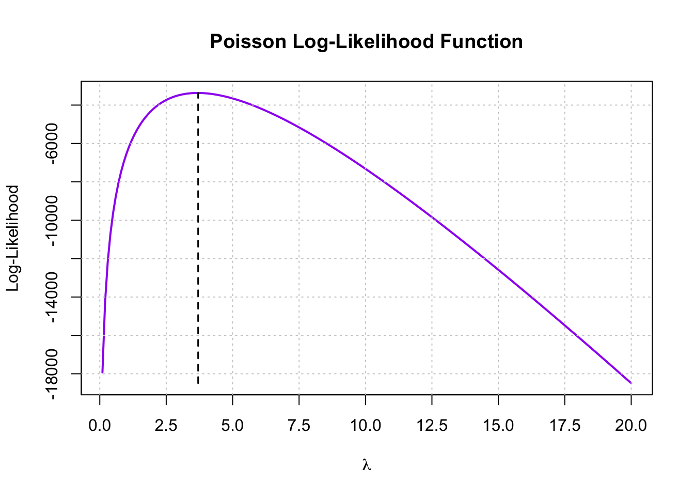

| Customer Status | Avg. Patents Awarded | Number of Firms |
|---|---|---|
| Non-Customer | 3.47 | 1019 |
| Customer | 4.13 | 481 |
Poisson Regression Examples
Blueprinty Case Study
Introduction
Blueprinty is a small firm that makes software for developing blueprints specifically for submitting patent applications to the US patent office. Their marketing team would like to make the claim that patent applicants using Blueprinty’s software are more successful in getting their patent applications approved. Ideal data to study such an effect might include the success rate of patent applications before using Blueprinty’s software and after using it. Unfortunately, such data is not available.
However, Blueprinty has collected data on 1,500 mature (non-startup) engineering firms. The data include each firm’s number of patents awarded over the last 5 years, regional location, age since incorporation, and whether or not the firm uses Blueprinty’s software. The marketing team would like to use this data to make the claim that firms using Blueprinty’s software are more successful in getting their patent applications approved.
Data
Number of Patents by Customer Status
Of the 1,500 firms in that dataset, 481 are customers. The average number of patents awarded to the customers is 4.13. This is slightly higher than the average of 3.47 patents awarded within the 1019 non-customer firms.
In the histogram below, you can see the number of patents broken down by customer status (Orange = Customer, Blue = Non-Customer). It is a bit trickier to see this difference in average patents by group, but there is a slight shift to the right within the customer distribution vs non-customers.
It is important to note that Blueprinty customers are not randomly selected. Systematic differences the age and regional location of customers and non-customers may influence both Blueprinty adoption and patenting outcomes. For this reason, we will explore these characteristics further.
Comparing Regional Distribution by Customer Status
The regional breakdown reveals that Blueprinty customers are not evenly distributed across regions. The Northeast has the highest proportion of customers with 55% of firms in that region use Blueprinty. Additionally, the Northeast region has the most firms in the dataset (601). On the other hand, the remaining region show much lower percentage of customers, with only 16%–18% of firms using the software. This could suggest that regional factors could impact whether a firm becomes a customer.
| region | Count | % Non-Customers | % Customers |
|---|---|---|---|
| Midwest | 224 | 83% | 17% |
| Northeast | 601 | 45% | 55% |
| Northwest | 187 | 84% | 16% |
| South | 191 | 82% | 18% |
| Southwest | 297 | 82% | 18% |
Comparing Firm Age by Customer Status
The age distribution of firms shows that customers (avg: 26.9) and non-customers (avg: 26.1) are very similar. tend to be slightly older than non-customers. Customers do have a wider spread of data and therefore a higher standard deviation (7.8 vs. 6.9), indicating more variability.
| Customer Status | Average Age | Median Age | Std. Dev | Number of Firms |
|---|---|---|---|---|
| Non-Customer | 26.1 | 25.5 | 6.9 | 1019 |
| Customer | 26.9 | 26.5 | 7.8 | 481 |
Estimation of Simple Poisson Model
Since our outcome variable of interest can only be small integer values per a set unit of time, we can use a Poisson density to model the number of patents awarded to each engineering firm over the last 5 years. We start by estimating a simple Poisson model via Maximum Likelihood.
Poisson model via Maximum Likelihood Equation
To calculate likelihood for \(Y \sim \text{Poisson}(\lambda)\), we need to use the density of the dependent variable. For a Poisson distribution, the density function is \(f(Y|\lambda) = e^{-\lambda}\lambda^Y/Y!\).
Converting into Log-Likelihood Function
To make the data easier to work with and more stable, we need to transform the likelihood function into a Log. Here is the log-likelihood function: \(\log L(\lambda) = \sum_{i=1}^{n} (-\lambda + Y_i \log \lambda - \log Y_i!)\)
poisson_loglikelihood <- function(lambda, Y) {
if (lambda <= 0) return(-Inf)
sum(Y * log(lambda) - lambda - lfactorial(Y))
}Log-Likelihood Over a Range of Lambdas

MLE - Mean of Poisson Distribution
Here are the calculations to find MLE by taking the mean of the Poisson distribution (which is lambda).
mean(df$patents)[1] 3.684667MLE - Optimizing Likelihood with optim
Here are the calculations to find MLE by optimizing the likelihood function with optim().
neg_loglik <- function(lambda) {
-poisson_loglikelihood(lambda, Y = df$patents)
}
optim_output <- optim(par = 1, fn = neg_loglik, lower = 0.01, upper = 20)
print(optim_output$par)[1] 3.684667Estimation of Poisson Regression Model
Next, we extend our simple Poisson model to a Poisson Regression Model such that \(Y_i = \text{Poisson}(\lambda_i)\) where \(\lambda_i = \exp(X_i'\beta)\). The interpretation is that the success rate of patent awards is not constant across all firms (\(\lambda\)) but rather is a function of firm characteristics \(X_i\). Specifically, we will use the covariates age, age squared, region, and whether the firm is a customer of Blueprinty.
todo: Update your likelihood or log-likelihood function with an additional argument to take in a covariate matrix X. Also change the parameter of the model from lambda to the beta vector. In this model, lambda must be a positive number, so we choose the inverse link function g_inv() to be exp() so that \(\lambda_i = e^{X_i'\beta}\). For example:
poisson_regression_likelihood <- function(beta, Y, X){
...
}Covariate Matrix X
# Update to Log-Likelihood
poisson_loglikelihood <- function(beta, Y, X) {
eta <- X %*% beta # linear predictor (X * beta)
lambda <- exp(eta) # inverse link function
loglik <- sum(Y * eta - lambda - lfactorial(Y))
return(-loglik) # negative because optim() minimizes
}
# Matrix X Design
df$age2 <- df$age^2
X <- model.matrix(~ age + age2 + region + iscustomer, data = df)
Y <- df$patentstodo: Use your function along with R’s optim() or Python’s sp.optimize() to find the MLE vector and the Hessian of the Poisson model with covariates. Specifically, the first column of X should be all 1’s to enable a constant term in the model, and the subsequent columns should be age, age squared, binary variables for all but one of the regions, and the binary customer variable. Use the Hessian to find standard errors of the beta parameter estimates and present a table of coefficients and standard errors.
Optim Coefficients Estimate and Std Error
start_vals <- rep(0, ncol(X))
fit <- optim(par = start_vals,
fn = poisson_loglikelihood,
Y = Y, X = X,
hessian = TRUE,
method = "BFGS")
beta_hat <- fit$par
se <- sqrt(diag(solve(fit$hessian))) # inverse of Hessian = variance-covariance matrix
results <- data.frame(
Coefficient = round(beta_hat, 4),
Std_Error = round(se, 4)
)
rownames(results) <- colnames(X)
results Coefficient Std_Error
(Intercept) -0.1257 0.1122
age 0.1158 0.0064
age2 -0.0022 0.0001
regionNortheast -0.0246 0.0434
regionNorthwest -0.0348 0.0529
regionSouth -0.0054 0.0524
regionSouthwest -0.0378 0.0472
iscustomer 0.0607 0.0321todo: Check your results using R’s glm() function or Python sm.GLM() function.
Check glm
glm_fit <- glm(patents ~ age + I(age^2) + region + iscustomer,
data = df, family = poisson)
summary(glm_fit)
Call:
glm(formula = patents ~ age + I(age^2) + region + iscustomer,
family = poisson, data = df)
Coefficients:
Estimate Std. Error z value Pr(>|z|)
(Intercept) -0.508920 0.183179 -2.778 0.00546 **
age 0.148619 0.013869 10.716 < 2e-16 ***
I(age^2) -0.002971 0.000258 -11.513 < 2e-16 ***
regionNortheast 0.029170 0.043625 0.669 0.50372
regionNorthwest -0.017574 0.053781 -0.327 0.74383
regionSouth 0.056561 0.052662 1.074 0.28281
regionSouthwest 0.050576 0.047198 1.072 0.28391
iscustomer 0.207591 0.030895 6.719 1.83e-11 ***
---
Signif. codes: 0 '***' 0.001 '**' 0.01 '*' 0.05 '.' 0.1 ' ' 1
(Dispersion parameter for poisson family taken to be 1)
Null deviance: 2362.5 on 1499 degrees of freedom
Residual deviance: 2143.3 on 1492 degrees of freedom
AIC: 6532.1
Number of Fisher Scoring iterations: 5todo: Interpret the results.
X_0 <- X; X_0[, "iscustomer"] <- 0
X_1 <- X; X_1[, "iscustomer"] <- 1
lambda_0 <- exp(X_0 %*% beta_hat)
lambda_1 <- exp(X_1 %*% beta_hat)
marginal_effect <- mean(lambda_1 - lambda_0)
marginal_effect[1] 0.2178843todo: What do you conclude about the effect of Blueprinty’s software on patent success? Because the beta coefficients are not directly interpretable, it may help to create two fake datasets: X_0 and X_1 where X_0 is the X data but with iscustomer=0 for every observation and X_1 is the X data but with iscustomer=1 for every observation. Then, use X_0 and your fitted model to get the vector of predicted number of patents (y_pred_0) for every firm in the dataset, and use X_1 to get Y_pred_1 for every firm. Then subtract y_pred_1 minus y_pred_0 and take the average of that vector of differences.
AirBnB Case Study
Introduction
AirBnB is a popular platform for booking short-term rentals. In March 2017, students Annika Awad, Evan Lebo, and Anna Linden scraped of 40,000 Airbnb listings from New York City. The data include the following variables:
todo: Assume the number of reviews is a good proxy for the number of bookings. Perform some exploratory data analysis to get a feel for the data, handle or drop observations with missing values on relevant variables, build one or more models (e.g., a poisson regression model for the number of bookings as proxied by the number of reviews), and interpret model coefficients to describe variation in the number of reviews as a function of the variables provided.
dfa <- read.csv("airbnb.csv")
dfa_clean <- na.omit(dfa[, c("number_of_reviews", "days", "bathrooms", "bedrooms", "price",
"review_scores_cleanliness", "review_scores_location",
"review_scores_value", "room_type", "instant_bookable")])
dfa_clean$room_type <- as.factor(dfa_clean$room_type)
dfa_clean$instant_bookable <- as.factor(dfa_clean$instant_bookable)summary(dfa_clean) number_of_reviews days bathrooms bedrooms
Min. : 1.00 Min. : 7 Min. :0.000 Min. : 0.000
1st Qu.: 3.00 1st Qu.: 584 1st Qu.:1.000 1st Qu.: 1.000
Median : 8.00 Median : 1041 Median :1.000 Median : 1.000
Mean : 21.17 Mean : 1140 Mean :1.122 Mean : 1.151
3rd Qu.: 26.00 3rd Qu.: 1592 3rd Qu.:1.000 3rd Qu.: 1.000
Max. :421.00 Max. :42828 Max. :6.000 Max. :10.000
price review_scores_cleanliness review_scores_location
Min. : 10.0 Min. : 2.000 Min. : 2.000
1st Qu.: 70.0 1st Qu.: 9.000 1st Qu.: 9.000
Median : 103.0 Median :10.000 Median :10.000
Mean : 140.2 Mean : 9.202 Mean : 9.415
3rd Qu.: 169.0 3rd Qu.:10.000 3rd Qu.:10.000
Max. :10000.0 Max. :10.000 Max. :10.000
review_scores_value room_type instant_bookable
Min. : 2.000 Entire home/apt:15543 f:24243
1st Qu.: 9.000 Private room :13773 t: 5917
Median :10.000 Shared room : 844
Mean : 9.334
3rd Qu.:10.000
Max. :10.000 hist(dfa_clean$number_of_reviews, breaks=50, main="Distribution of Number of Reviews",
xlab="Number of Reviews", col="purple")
boxplot(number_of_reviews ~ room_type, data=dfa_clean,
main="Number of Reviews by Room Type", ylab="Number of Reviews")plot(log(dfa_clean$price), dfa_clean$number_of_reviews,
main="Number of Reviews vs Log Price", xlab="Log(Price)", ylab="Number of Reviews",
col="gold", pch=20)
model_poisson <- glm(number_of_reviews ~ days + bathrooms + bedrooms + price +
review_scores_cleanliness + review_scores_location +
review_scores_value + room_type + instant_bookable,
family = poisson(link = "log"), data = dfa_clean)
summary(model_poisson)
Call:
glm(formula = number_of_reviews ~ days + bathrooms + bedrooms +
price + review_scores_cleanliness + review_scores_location +
review_scores_value + room_type + instant_bookable, family = poisson(link = "log"),
data = dfa_clean)
Coefficients:
Estimate Std. Error z value Pr(>|z|)
(Intercept) 3.498e+00 1.609e-02 217.396 < 2e-16 ***
days 5.072e-05 3.909e-07 129.757 < 2e-16 ***
bathrooms -1.177e-01 3.749e-03 -31.394 < 2e-16 ***
bedrooms 7.409e-02 1.992e-03 37.197 < 2e-16 ***
price -1.791e-05 8.327e-06 -2.151 0.031485 *
review_scores_cleanliness 1.131e-01 1.496e-03 75.611 < 2e-16 ***
review_scores_location -7.690e-02 1.609e-03 -47.796 < 2e-16 ***
review_scores_value -9.108e-02 1.804e-03 -50.490 < 2e-16 ***
room_typePrivate room -1.054e-02 2.738e-03 -3.847 0.000119 ***
room_typeShared room -2.463e-01 8.620e-03 -28.578 < 2e-16 ***
instant_bookablet 3.459e-01 2.890e-03 119.666 < 2e-16 ***
---
Signif. codes: 0 '***' 0.001 '**' 0.01 '*' 0.05 '.' 0.1 ' ' 1
(Dispersion parameter for poisson family taken to be 1)
Null deviance: 961626 on 30159 degrees of freedom
Residual deviance: 926886 on 30149 degrees of freedom
AIC: 1048375
Number of Fisher Scoring iterations: 9exp(coef(model_poisson)) (Intercept) days bathrooms
33.0509226 1.0000507 0.8889592
bedrooms price review_scores_cleanliness
1.0769008 0.9999821 1.1197873
review_scores_location review_scores_value room_typePrivate room
0.9259830 0.9129479 0.9895192
room_typeShared room instant_bookablet
0.7816588 1.4131909 dispersion <- sum(residuals(model_poisson, type = "pearson")^2) / model_poisson$df.residual
print(dispersion)[1] 45.54979if (dispersion > 1.5) {
library(MASS)
model_nb <- glm.nb(number_of_reviews ~ days + bathrooms + bedrooms + price +
review_scores_cleanliness + review_scores_location +
review_scores_value + room_type + instant_bookable,
data = dfa_clean)
summary(model_nb)
}
Call:
glm.nb(formula = number_of_reviews ~ days + bathrooms + bedrooms +
price + review_scores_cleanliness + review_scores_location +
review_scores_value + room_type + instant_bookable, data = dfa_clean,
init.theta = 0.7379657958, link = log)
Coefficients:
Estimate Std. Error z value Pr(>|z|)
(Intercept) 3.220e+00 9.255e-02 34.789 < 2e-16 ***
days 4.784e-04 5.401e-06 88.575 < 2e-16 ***
bathrooms -8.268e-02 1.984e-02 -4.168 3.08e-05 ***
bedrooms 7.333e-02 1.110e-02 6.604 4.01e-11 ***
price -3.725e-05 4.049e-05 -0.920 0.35760
review_scores_cleanliness 1.998e-01 7.881e-03 25.357 < 2e-16 ***
review_scores_location -1.143e-01 9.210e-03 -12.410 < 2e-16 ***
review_scores_value -1.728e-01 1.026e-02 -16.847 < 2e-16 ***
room_typePrivate room 5.996e-03 1.481e-02 0.405 0.68558
room_typeShared room -1.282e-01 4.257e-02 -3.010 0.00261 **
instant_bookablet 4.196e-01 1.731e-02 24.238 < 2e-16 ***
---
Signif. codes: 0 '***' 0.001 '**' 0.01 '*' 0.05 '.' 0.1 ' ' 1
(Dispersion parameter for Negative Binomial(0.738) family taken to be 1)
Null deviance: 37299 on 30159 degrees of freedom
Residual deviance: 34295 on 30149 degrees of freedom
AIC: 240149
Number of Fisher Scoring iterations: 1
Theta: 0.73797
Std. Err.: 0.00554
2 x log-likelihood: -240124.57300